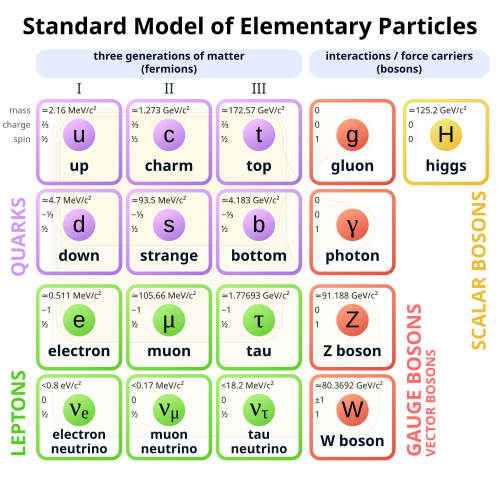
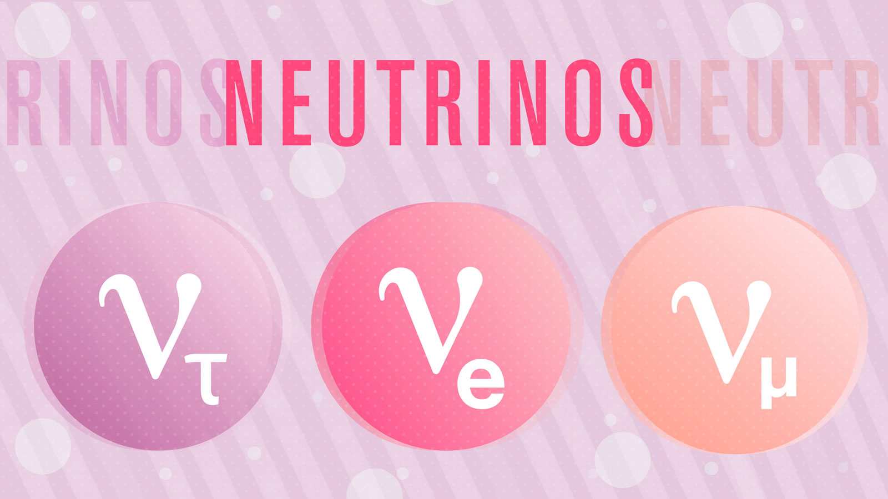
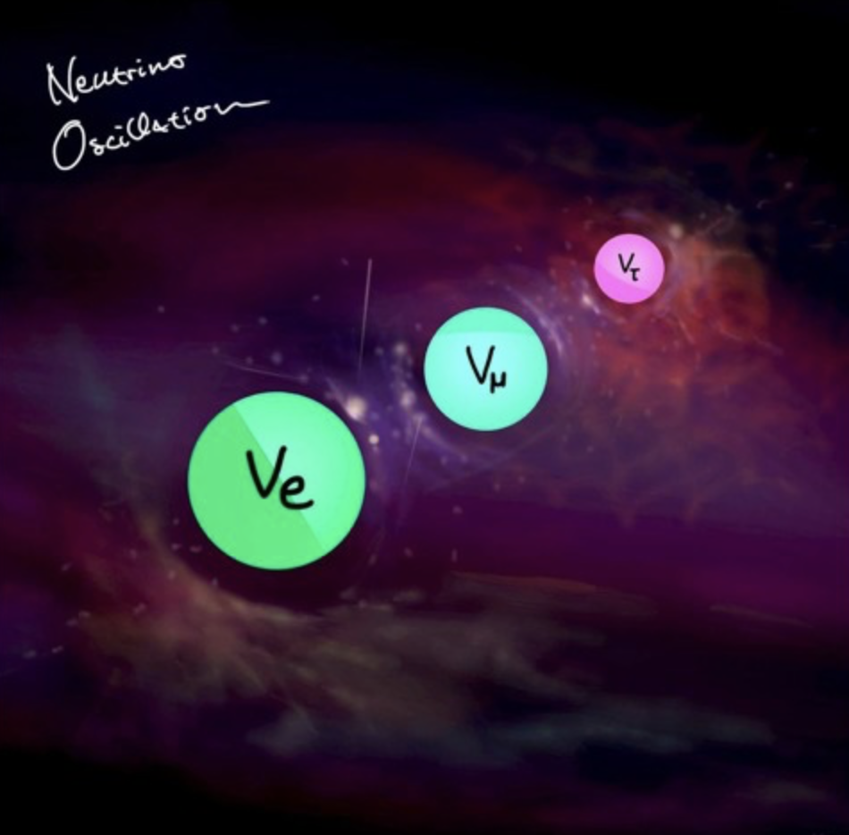
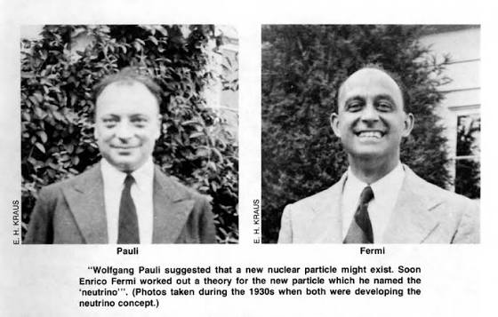
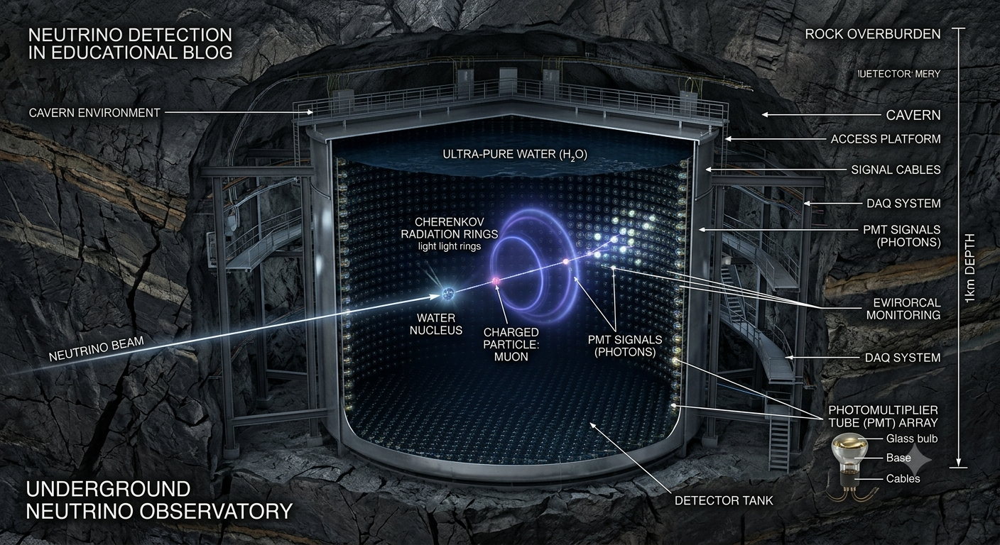
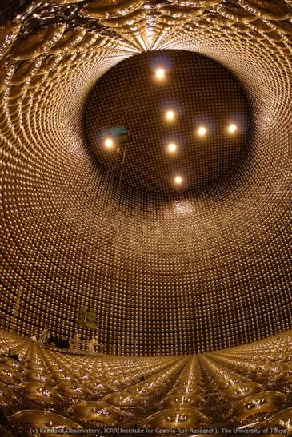

If you take a piece of brick and keep breaking it into smaller and smaller pieces, you will eventually reach atoms. If you go deeper, atoms consist of electrons and a nucleus. The nucleus itself is made of protons and neutrons, and these are further made of quarks held together by gluons.
This naturally leads to a deeper question:
Fundamental particles are those that do not have any internal structure. For example, electrons and quarks are fundamental, but protons are not, because they are made of quarks.
Among these fundamental particles, one of the most fascinating and mysterious is the neutrino.

A neutrino is a fundamental particle in the Standard Model of particle physics.

Neutrinos can change their type while traveling. This is called neutrino oscillation.

Scientists studying beta decay found that electrons had a continuous energy spectrum, which violated energy conservation expectations.
Wolfgang Pauli proposed an invisible particle carrying away missing energy.
Enrico Fermi developed the theory and named it "neutrino".

Clyde Cowan and Frederick Reines detected neutrinos near a nuclear reactor using inverse beta decay.

And you don’t feel anything!
Neutrinos can pass through Earth without interacting. Detecting them requires massive detectors placed deep underground.

Neutrinos are mysterious particles that help us understand the universe, from stars to cosmic events.